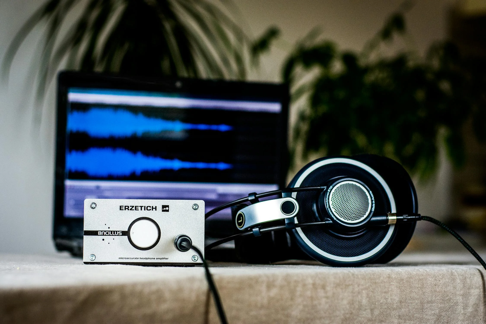
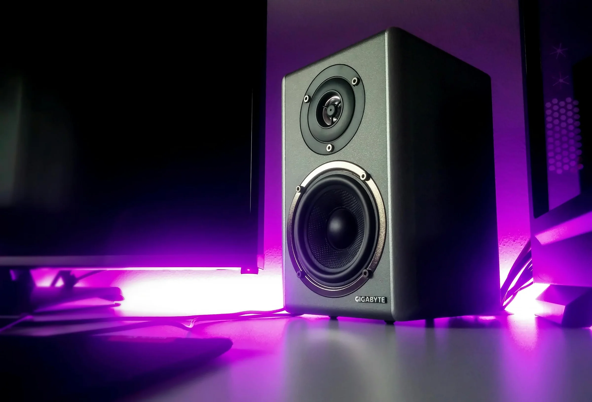

Tokyo, Seoul & Mumbai's Trusted Audio Partner
Professional Japanese, Korean & Indian dubbing, localization, and audio production. Fast turnarounds. Authentic quality.
Request a QuoteWhy Choose Potbelly Audio
Founded in 2013 by Pooja Punjabi, a professional voice-over artist and dubbing director, Potbelly Audio combines creative understanding with technical precision. We specialize in:
Japanese & Korean Expertise
Deep understanding of anime, live-action drama, and OTT content. Culturally authentic dubbing, not just literal translation.
Fast Turnarounds
Agile boutique approach means no corporate bureaucracy. We move quickly without sacrificing quality.
Founder-Led Quality
Pooja Punjabi personally oversees every project. Artist's ear combined with technical excellence.
Multilingual Reach
Japanese, Korean, Hindi, Tamil, Telugu, Kannada, Malayalam, Gujarati, Bengali, Marathi, English and more.
Our Services

Dubbing
Professional voice replacement for anime, live-action, documentaries, corporate videos, and streaming content in Japanese, Korean, and Indian languages.
Learn more
Localization
Complete multilingual adaptation including dubbing, subtitles, music, sound effects, and cultural nuance for global audiences.
Learn moreTranslation & Transcreation
Script translation and trans-creation maintaining intent, tone, and cultural authenticity across languages.
Learn more
Audio Production
Mixing, mastering, original scoring, sound design, and post-production for film, streaming, and corporate media.
Learn moreServing Global Markets
Japan
Anime studios, live-action drama production, and OTT platforms rely on us for authentic Japanese dubbing and cultural localization.
Korea
K-drama teams and streaming platforms trust our Korean dubbing expertise and understanding of Korean content conventions.
India
Domestic partner for Indian OTT, corporate communications, and video agencies needing regional language excellence.
Founder & Leadership

Pooja Punjabi
Founder & Creative Director
Potbelly Audio was founded by Pooja Punjabi, a professional voice-over artist and dubbing director with over a decade of experience in the audio production industry. Her background as a performer combined with deep technical knowledge ensures every project maintains artistic integrity while achieving broadcast quality.
Pooja personally oversees creative direction for all projects, bringing an artist's ear and producer's precision to every deliverable.
Trusted by Leading Brands
We partner with video agencies, production companies, and streaming platforms across Asia.
Ready to Bring Your Content to Life?
Get a free quote or consultation. Email us with your project details.
Request Quote